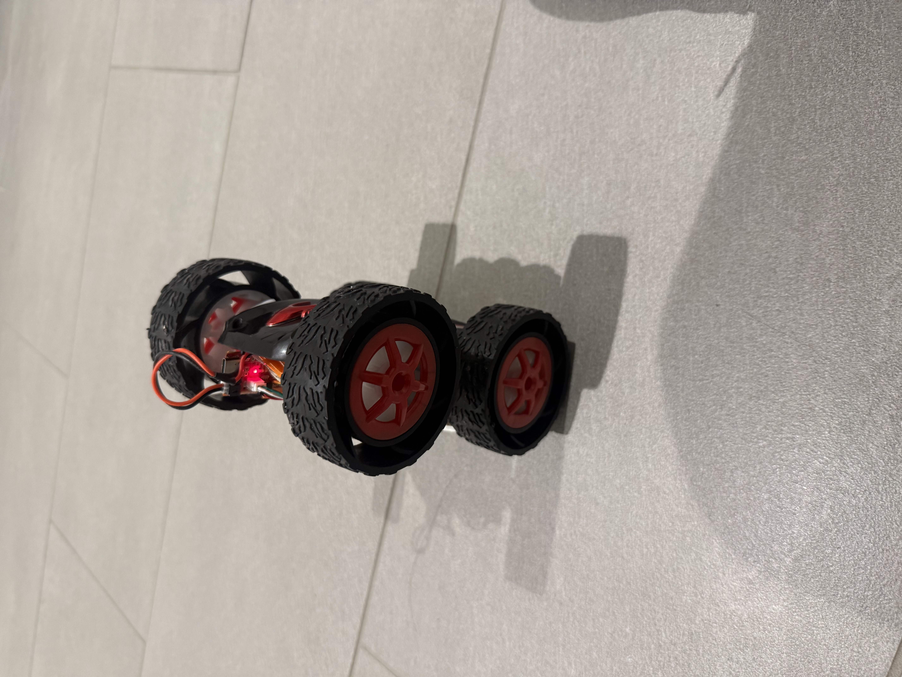
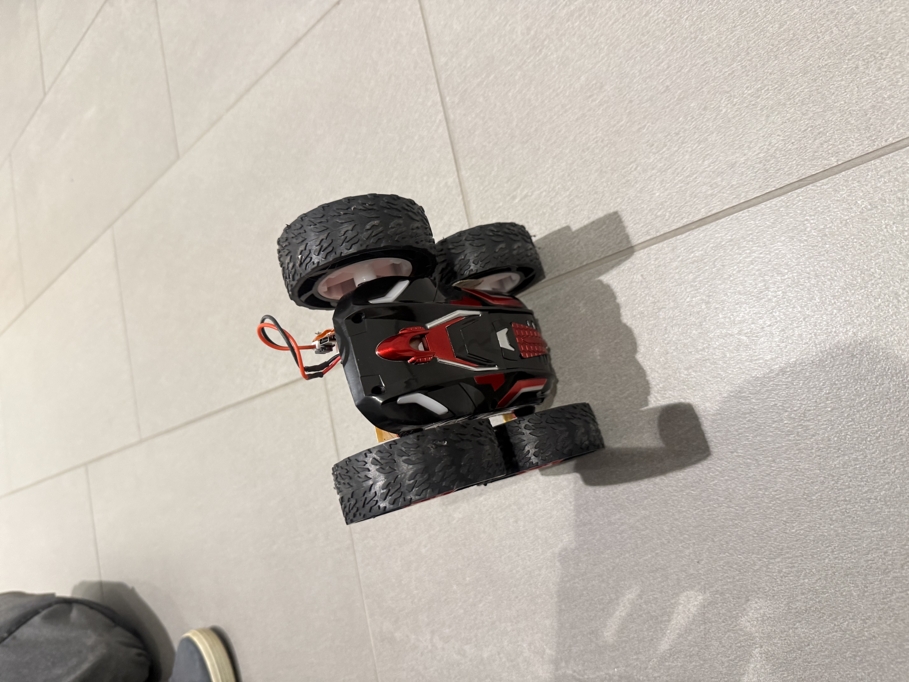

1. Introduction
Lab 12 treated the RC car as an inverted pendulum: drive onto the front wheels, estimate pitch in real time, and close the loop so the vehicle can hold a wheelie. The plant is unstable without feedback, so attitude estimation and a fast control loop were essential.
Work split into two phases:
- Phase A — Prove balancing by starting from an upright, hand-placed pose; tune sensors, filters, and controllers without the dynamics of a floor-to-wheelie transition.
- Phase B — Add a pop sequence: open-loop torques to lift the nose from flat, then hand off to the balance controller when pitch crosses a threshold (with Kalman filtering to smooth the violent part of the motion).
On our test surface, the autonomous pop was sensitive to traction and torque, so demonstrations emphasized reliable Phase A balance while Phase B remained a best-effort extension. The report below documents estimation, system ID, the Kalman model, both controllers, the pop state machine, tuning over BLE, and measured behavior—including the fact that pitch-only balance trades angular stability for slow translation on two drive wheels.
2. Sensor evaluation and pitch estimation
Pitch came from the ICM-20948 DMP. An early approach reused a Lab 6-style atan2 roll mapping; near the upright attitude that produced gimbal lock (angles wrapping harshly, e.g. between roughly −88° and +269°), which made any controller unusable.
The fix was a quaternion projection that stays well-behaved near 90° pitch:
double sinp = 2.0 * (q0*q2 - q3*q1);
double cosp = 1.0 - 2.0 * (q2*q2 + q1*q1);
float dmp_pitch = (float)(atan2(sinp, cosp) * 180.0 / PI);A complementary filter fused high-rate gyro integration with the slower, absolute DMP angle:
// Gyro integration each loop when IMU data is ready
if (myICM.dataReady()) {
myICM.getAGMT();
float rate = GYRO_AXIS; // deg/s on pitch axis
float dt_s = (last_imu_time == 0) ? 0.0f
: (float)(now - last_imu_time) / 1000.0f;
if (dt_s > 0.0f && dt_s < 0.1f)
gyro_pitch += rate * dt_s;
last_imu_time = now;
}
// DMP quaternion update ~56 Hz
current_pitch = 0.98f * gyro_pitch + 0.02f * dmp_pitch;
gyro_pitch = current_pitch; // re-sync to limit driftConvention: flat on the ground ≈ 0°; stable wheelie ≈ 82–90°; inverted ≈ ±180°. After the change, pitch was continuous through the flip range with no wrap-induced glitches.
3. System identification
Parameters α₁ (gravity-like stiffness in pitch) and α₂ (motor effectiveness) were estimated from logs.
- α₁ — free response (u = 0): vehicle held near 30° and released. Fitting pitch acceleration vs. pitch offset gave α₁ ≈ 5.36 (deg/s²)/deg.
- α₂ — step torque: PWM 120 (normalized u ≈ 0.47) while measuring pitch acceleration yielded α₂ ≈ 45.0 (deg/s²)/u.
Those values sized the discrete plant used inside the Kalman predictor.
4. Kalman filter
A two-state filter tracked θ and θ̇ during Phase B, where raw DMP angle is noisy under rapid rotation. Discrete-time matrices (from the lab derivation) were:
θ̈ = α₁ θ − α₂ u, x = [θ, θ̇]ᵀ
Ad = [[1.0, 0.0177], Bd = [[0.0 ],
[0.0949, 1.0 ]] [-0.7965]]
C = [1, 0]void build_kf_matrices() {
Ad = {1.0f, KF_DT,
KF_ALPHA1 * KF_DT, 1.0f };
Bd = {0.0f, -KF_ALPHA2 * KF_DT};
C_kf = {1.0f, 0.0f};
Sigma_u = {kf_sigma1*kf_sigma1, 0.0f,
0.0f, kf_sigma2*kf_sigma2};
Sigma_z = {kf_sigma3 * kf_sigma3};
}With σ₁ = σ₂ = 50, σ₃ = 1, the filter trusted measurements while still using the model for smooth rate. Predict ran every control iteration (~1 kHz); update ran when a new DMP sample arrived (~56 Hz).
5. Controller design
5.1 Bang-bang (relay) baseline
Bang-bang verified that pitch was observable and that sign-correct torque could push the error the right way. It applied fixed magnitude PWM with a Schmitt band and a minimum switch time to limit chatter:
int run_bang_bang_pwm(float pitch_deg, unsigned long now) {
float err = SETPOINT_DEG - pitch_deg;
if (fabsf(err) <= BB_ERR_OFF_DEG)
bb_schmitt = 0;
else if (err >= BB_ERR_ON_DEG)
bb_schmitt = 1;
else if (err <= -BB_ERR_ON_DEG)
bb_schmitt = -1;
int out_sign = bb_schmitt;
if (out_sign != bb_last_out && (now - bb_last_sw) < BB_MIN_SWITCH_MS)
out_sign = bb_last_out;
if (out_sign != bb_last_out) bb_last_sw = now;
bb_last_out = out_sign;
return out_sign * BB_FIXED_PWM; // e.g. 120
}Behavior: limit-cycle oscillation and no clean steady hold—expected for a relay on a second-order plant.
Video 1: Wheelie with bang-bang controller.
5.2 PID balancing
The main controller ran on complementary-filter pitch, with the gyro feeding the derivative path (derivative-on-measurement style, avoiding differentiated angle noise). A gain schedule softened action near the setpoint:
float run_simple_pd(float pitch_deg, float gyro_rate_deg_s, unsigned long now) {
float error = SETPOINT_DEG - pitch_deg;
float abs_e = fabsf(error);
float p_term = 0.0f;
if (abs_e < BALANCE_ANGLE_DEADBAND_DEG) p_term = 0.0f;
else if (abs_e <= BALANCE_SOFT_ERROR_MAX_DEG) p_term = (Kp * Kp_SOFT_SCALE) * error;
else p_term = Kp * error;
float d_scale = (abs_e < D_TERM_SOFT_ERROR_MAX_DEG) ? D_TERM_SOFT_SCALE : 1.0f;
float d_term = -Kd * gyro_rate_deg_s * d_scale;
return constrain(p_term + d_term, -(float)BALANCE_PWM_CAP, (float)BALANCE_PWM_CAP);
}| Parameter | Value |
|---|---|
| Kp | 9.0 |
| Ki | 0.2 |
| Kd | 1.0 |
| Setpoint | 86.82° |
| Output deadband | 22 PWM |
| Soft Kp scale | 0.42× for |error| < 9° |
The 86.82° setpoint was taken from a physically balanced pose (Serial readout). Output deadband suppressed limit-cycle chatter from static friction; integral was anti-windup clamped.
Video 2: Wheelie stabilized with PID.
6. Phase B — pop sequence
Phase B chained timed open-loop segments, then waited for pitch to enter the capture region before reinitializing the KF and PID:
case STATE_POP_DRIVE:
drive_forward(POP_DRIVE_PWM); // e.g. 255 PWM, 200 ms
if (now - state_enter_time >= 200) { robot_state = STATE_POP_BRAKE; }
break;
case STATE_POP_BRAKE:
drive_backward(POP_BRAKE_PWM); // reverse, 300 ms
if (now - state_enter_time >= 300) { robot_state = STATE_POP_BACK; }
break;
case STATE_POP_BACK:
drive_backward(POP_BACK_PWM); // additional reverse, 300 ms
if (now - state_enter_time >= 300) { robot_state = STATE_POP_WAIT; }
break;
case STATE_POP_WAIT:
if (now - state_enter_time > 500) { robot_state = STATE_IDLE; break; }
if (kf_pitch() >= HANDOFF_ANGLE) { // e.g. pitch > 55°
kf_init(current_pitch);
reset_pid_state();
robot_state = STATE_BALANCING;
}
break;7. BLE interface
Runtime tuning avoided reflashing: same style of packets as earlier labs, e.g. SET_GAINS (cmd 11) for PID, pop timing, handoff angle, and KF sigmas. High-rate logging (order 56 Hz) carried time, raw vs. filtered pitch, motor command, error, and estimated rate for post-processing.
8. State machines
Phase A (balance / mode logic) — high-level flow for entering and maintaining the balance loop:

Phase B (pop and handoff) — open-loop pop states and transition to closed-loop balance:

9. Results and demonstration
Phase A — With the car placed upright, the PID loop regularly achieved roughly 3–8 s of balance, with good rejection of small bumps. Disturbances above ~15° often exceeded what the wheel torque could recover in time, so the vehicle tipped.
Because there was no outer position loop, the car did not stay in one spot: it crept and turned on the front wheels while keeping pitch near setpoint—the usual trade for a wheelie without lateral or heading regulation.
Phase B — The state machine and handoff logic ran as designed; end-to-end reliability from flat was on the order of 40–60% per try on our floor, dominated by traction and repeatability of the pop impulse rather than by the balance math alone.
9.1 Balanced wheelie photos

Balanced wheelie showing steady-state pitch.

Another view of the robot maintaining balance.
10. Conclusion
The lab showed closed-loop stabilization of an unstable pitch mode using the ICM-20948, a gimbal-safe pitch extraction, complementary filtering for Phase A, and a model-based Kalman path for the aggressive Phase B motion. Bang-bang validated controllability but highlighted the need for smooth actuation; PID with scheduled gains and gyro-based damping delivered the final demos. Practical lessons: handle Euler singularities near the operating pose; prefer gyro over differencing angle for D; and separate angle balance from position holding when reporting performance. Natural extensions are better traction or gearing for the pop, adaptive handoff timing, and an outer loop to limit drift across the floor.
AI usage: AI was used to build this site and to help format and structure the lab writeup.